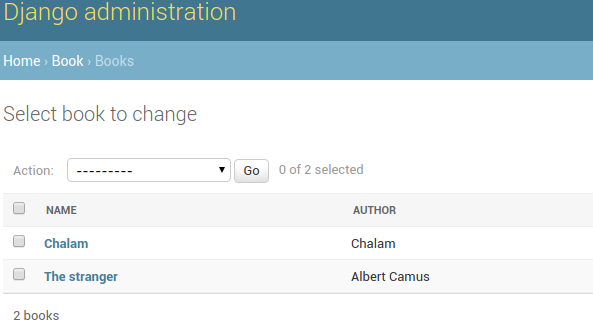
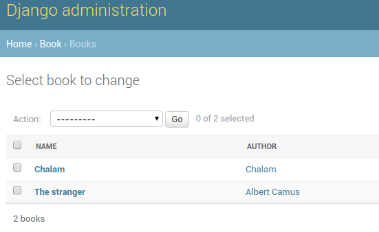

Django Tips & Tricks #8 - Hyperlink Foreignkey Fields In Admin
Consider Book model which has Author as foreignkey.
from django.db import models class Author(models.Model): name = models.CharField(max_length=100) class Book(models.Model): title = models.CharField(max_length=100) author = models.ForeignKey(Author)
We can register these models with admin interface as follows.
from django.contrib import admin from .models import Author, Book class BookAdmin(admin.ModelAdmin): list_display = ('name', 'author', ) admin.site.register(Author) admin.site.register(Book, BookAdmin)
Once they are registed, admin page shows Book model like this.

While browsing books, we can see name and author. Here, name field is liked to change view of book. But author field is shown as plain text. If we have to modify author name, we have to go back to authors admin page, search for relevant author and then change name.
This becomes tedious if we spend lot of time in admin for tasks like this. Instead, if author field is hyperlinked to its change view, we can directly go to that page.
Django provides an option to access admin views by its URL reversing system. For example, we can get change view of author model in book app using reverse("admin:book_author_change", args=id). Now we can use this url to hyperlink author field in book admin.
from django.contrib import admin from django.utils.safestring import mark_safe class BookAdmin(admin.ModelAdmin): list_display = ('name', 'author_link', ) def author_link(self, book): url = reverse("admin:book_author_change", args=[book.author.id]) link = '<a href="%s">%s</a>' % (url, book.author.name) return mark_safe(link) author_link.short_description = 'Author'
Now in the book admin view, author field will be hyperlinked to its change view and we can visit just by clicking it.

Depending on requirements, we can link any field in django to other fields or add custom fields to improve productivity.

Chillar Anand
A blog about python, careers & life.
To contact me, send a message here.